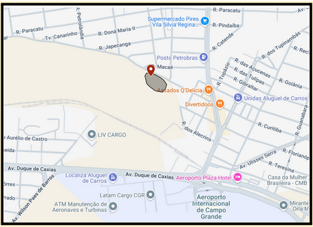
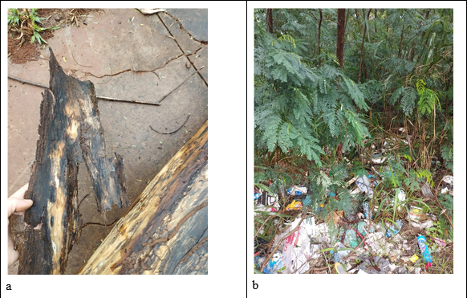

Resumo
O incêndio subterrâneo é um tipo de incêndio que se propaga através das raízes ou da camada orgânica do solo, caracterizando-se por uma combustão sem chama, o que dificulta sua detecção e combate. Esse tipo de incêndio pode liberar fumaça e gases tóxicos por longos períodos, representando riscos à saúde e ao meio ambiente, especialmente em áreas urbanas. No ano de 2021, em uma área densamente povoada na região do Parque Linear do Imbirussu houve um incêndio subterrâneo que persistiu por meses. Investigamos este evento em três frentes: as questões climáticas, o solo e a vegetação. Para análise climática, a chuva foi analisada diariamente e mensalmente para o período seco, e comparada com a normal climatológica. Foram feitas visitas a campo, onde foi observada a infestação por Leucena, que pode estar associada aos incêndios da região. Por fim, foi realizada coleta de solo, que indicou a presença de uma camada orgânica em subsuperfície, a partir de 40 cm de profundidade. Esse comportamento incomum do perfil de solo pode ser associado a um antropossolo, e pode ajudar a explicar a origem do material combustível que permaneceu queimando durante meses.
Introdução
Os incêndios são um grande problema ambiental e de saúde pública, que tem afetado gravemente o estado de Mato Grosso do Sul nos últimos anos. Dentre os inúmeros incêndios ocorridos em Campo Grande no ano de 2021, o incêndio subterrâneo ocorrido em área de preservação em parte do parque linear do Imbirussu, no bairro Sìlvia Regina, chamou especial atenção.
Incêndio subterrâneo é aquele que se propaga através das raízes ou na manta morta inferior, normalmente, com uma combustão sem chama (CASTRO et al., 2006 p.31). Este incêndio gera impactos de grandes proporções, porque queima as raízes das árvores e destrói a matéria orgânica dos solos. É muitas vezes chamado de “incêndio de turfa” (COTA; BAPTISTA, 2015)
Por se tratar de uma combustão sem chama, o incêndio subterrâneo é especialmente difícil de detectar. Da mesma forma, este é um incêndio com combate complicado porque a área afetada pode liberar fumaça e gases tóxicos por longos períodos, mesmo após a extinção aparente do fogo na superfície, e por isso também se configura como importante questão de saúde pública, uma vez que pode desencadear problemas respiratórios e cardiovasculares. Isso ocorre porque a combustão incompleta libera partículas tóxicas para a atmosfera (BURKE et al. 2019).
No caso do Parque Linear do Imbirussu, este fenômeno foi especialmente devastador porque além de ter colocado em risco a vida da fauna que habita a área, ocorreu em região densamente povoada, tendo sido um risco também para a população. Pirajá e Silva (2013) demonstraram que as queimadas na região são uma questão histórica. Os autores observaram áreas de queimadas visíveis em imagens de satélite do ano de 1985 na bacia do córrego Imbirussu.
Ainda assim, a ocorrência de um incêndio subterrâneo foi considerado um fenômeno novo e raro. Uma das questões intrigantes sobre este incêndio diz respeito ao material combustível, que permaneceu queimando por meses (MACHADO, 2021). Estaria este fenômeno associado à geologia da região (turfa propriamente dita)? Neste trabalho partimos da hipótese de que a ocupação do bairro está de alguma forma associada à quantidade de matéria orgânica que serviu de combustível para este incêndio especialmente porque a ocupação do bairro é permeada por outro importante problema ambiental: a falta de saneamento básico. Em reportagem jornalística (MIDIAMAX, 2021), moradores relatam a existência de esgoto correndo a céu aberto, mato e moradias precárias nos anos noventa.
O Parque Linear do Imbirussu só foi inaugurado em 2011, e além da criação da área de preservação às margens do córrego, as ocupações irregulares foram retiradas, foi realizado novo traçado de ruas e o sistema de saneamento básico foi implementado (PIRAJÁ; SILVA, 2013).
Dessa forma, compreender a dinâmica do fenômeno é relevante para a preservação da biodiversidade e segurança dos moradores do entorno do Parque Linear Imbirussu e de outros bairros com características semelhantes. Assim, este trabalho pode contribuir para o aprimoramento de estratégias de monitoramento ambiental e controle de riscos permitindo a atuação preventiva diante de possíveis reincidências e fenômenos correlatos.
Objetivos
Objetivo geral:
Compreender os fatores ambientais que levaram ao fenômeno de incêndio subterrâneo em um trecho do Parque Linear do Imbirussu em Campo Grande no ano de 2021.
Objetivos específicos:
Estimar a data de início e término do evento de fogo subterrâneo no Parque Linear do Imbirussu.
Analisar as condições climáticas do ano de 2021 e suas relações com este evento.
Investigar as características específicas do solo da região queimada, quanto à presença de turfa, e analisar a espessura da camada orgânica do solo.
Analisar a correlação entre as queimadas e a proliferação da leucena (Leucaena leucocephala).
Metodologia
Com vistas ao cumprimento dos objetivos traçados, foi realizada a revisão de literatura sobre o tema incêndios e incêndios subterrâneos. A fim de conhecer detalhes sobre este fenômeno específico e melhor estimar a duração de tal evento, também foi realizada uma busca de notícias sobre este episódio na mídia digital local e redes sociais. Para tanto, foram utilizados os seguintes termos de busca: “fogo Sílvia Regina Campo Grande”, “fogo Subterrâneo Sílvia Regina”, “incêndio Sílvia Regina”, “queimada Sílvia Regina” e “incêndio subterrâneo Sílvia Regina”.
Para a caracterização climática do ano de 2021, foram analisados os fatores chuva e umidade relativa. Os dados climáticos foram coletados junto ao Instituto Nacional de Meteorologia (INMET). A partir dos dados horários disponibilizados pelo Instituto, foram calculadas as médias diárias, quinzenais e mensais, e elaborados gráficos quinzenais e mensais para o período seco do ano (abril a outubro) com o auxílio da ferramenta Google Planilhas.
Esses dados foram comparados com a Normal Climatológica para o município de Campo Grande (período 1981 - 2010), também disponibilizada pelo INMET. Para o cálculo das médias mensais da umidade relativa do ar, foi utilizada a metodologia apresentada no Método 2 pelo Atlas Agroclimático do estado do Rio Grande do Sul (1989).
Para a análise de uso do solo, foram feitas visitas a campo e parâmetros como cobertura vegetal, presença de lixo e evidências de queimadas anteriores foram observados e fotografados. Para análise dos horizontes do solo, foi escolhida aleatoriamente um ponto dentro da área que sofreu com o incêndio de 2021 (Figura 1) e foi realizada uma perfuração de 0,5 metros de profundidade com uso de cavadeira articulada manual.
Figura 1. Área aproximada da ocorrência de incêndio subterrâneo e ponto de coleta de solo. Fonte: as autoras (2025)
As amostras de solo foram coletadas da seguinte maneira: Como a primeira camada era muito homogênea, foi feita uma coleta de 0 a 20 cm, então uma coleta de 20 a 30 cm, uma amostra de 30 a 40 cm e a última amostra de 40 a 50 cm.
As amostras foram fotografadas para análise visual e enviadas para o Laboratório de Química do Instituto Federal de Mato Grosso do Sul para análise de porcentagem de matéria orgânica, seguindo a metodologia proposta no Manual de Métodos de análise de solo (TEIXEIRA et al., 2017). A estudante realizou as análises com o auxílio da orientadora e do técnico de laboratório (Figura 2).
Figura 2. Estudante realizando a análise laboratorial de solo. Fonte: As autoras (2025).
Para analisar a proliferação de Leucena na área de estudo, foi realizada a leitura de material específico, além da identificação da espécie em campo.
Resultados e discussão
O gráfico a seguir (Gráfico 1) mostra a comparação dos climogramas mensais do período seco em Campo Grande (abril a setembro) em relação à normal climatológica (1981 - 2010) no ano de 2021.
Gráfico 1: Comparação de chuva entre a Normal Climatológica e o ano de 2021 para o período seco (abril a setembro) no município de Campo Grande - MS
O gráfico 1 demonstra que o ano de 2021 foi extremamente seco, quando comparado à normal climatológica, sendo que em todos os meses a chuva ficou abaixo da média. Porém, o mês de julho se destaca pela seca extrema: enquanto a chuva normal para o período foi de 47,4 mm, em 2021, choveu apenas 1,8 mm.
É importante pontuar que em julho o incêndio subterrâneo já estava em curso, como relatado pela imprensa. O único episódio de chuva do mês ocorreu no dia 18, mas o volume de 1,8 mm de chuva seria irrelevante para apagar o incêndio.
Para o mês de agosto, os dados diários mostram melhor as condições extremas do ano de 2021 (Gráfico 2 e Gráfico 3):
Gráfico 2: Chuva e Umidade relativa na primeira quinzena de agosto de 2025
No Gráfico 2 é possível observar que, na primeira semana do mês não houve chuva, permanecendo a condição de seca extrema. Desse modo, não havia condições climáticas para extinção do incêndio.
Gráfico 3: Chuva e Umidade relativa na segunda quinzena de agosto de 2025.
O gráfico 3 é bastante revelador em relação às condições do mês, mostrando que toda a chuva acumulada ocorreu a partir do dia 28 (30 mm). Ainda assim, este volume não foi suficiente para encerrar o episódio de incêndio, já que a imprensa (MACHADO, 2021) relata a persistência do evento no início de setembro.
No mês de setembro de 2021, há chuva expressiva apenas nos dias 09 (17,8 mm) e no dia 26 e 27 (7,2 mm e 1,2 mm respectivamente). Considerando que a chuva de 30 mm em agosto não foi suficiente para a extinção do incêndio, é possível que este incêndio tenha sido extinto apenas no dia 10 de outubro, quando ocorreu uma chuva de 33,6 mm, ou, mais provavelmente no dia 24 de outubro, quando choveu 68,4 mm, perdurando por mais de cinco meses.
O entendimento deste fenômeno inclui também outros fatores importantes, como a ocupação do bairro. Assim, as visitas à área confirmaram as informações levantadas junto à mídia local (MIDIAMAX, 2021) e trabalhos científicos (PIRAJÁ; SILVA, 2013) que descrevem despejo de lixo e queimadas anteriores, como se pode observar na Figura 3:
Figura 3. Imagens da área de estudo: a) Casca de árvore (Leucaena leucocephala) chamuscada b) descarte irregular de lixo e infestação de (Leucaena leucocephala). Fonte: As autoras, 2025.
As visitas in loco mostraram que a vegetação desta região do Parque está infestada de Leucenas, e em alguns pontos, esta é a única espécie existente. Assim, quando se observa à distância, a área parece preservada, mas quando se observa de perto, é dominada por uma espécie invasora.
Para Costa (2010) a Leucaena leucocephala é uma espécie exótica e invasora, por sua facilidade ao se alastrar pela região causando redução de espécies e perda da biodiversidade, A partir deste ano, por força de lei, ela deve ser erradicada (CAMPO GRANDE, 2025).
É importante destacar que eventuais períodos prolongados de seca podem ampliar as chances de invasão dessa espécie (COSTA, 2010). Assim, a seca do ano de 2021 pode ter contribuído para a proliferação da Leucena na área do Parque Linear do Imbirussu.
Durante visitas em campo, foram observadas também Leucenas chamuscadas, o que indica que elas sobreviveram a antigas queimadas. Estudos de Silva et al. (2023), mostram que o seu potencial invasor também se dá devido à resistência de suas sementes ao fogo e outras características biológicas, o que favorece seu alto potencial de proliferação, especialmente após grandes incêndios. Assim, na área, a grande presença de Leucenas pode estar diretamente associada aos incêndios.
Sobre o solo, a figura a seguir (Figura 4) mostra as especificidades do solo encontrado:

Figura 4: Comparação entre um solo normal e o encontrado no Parque Linear. Adaptado de Lepsch, (2010).
O solo analisado começa com uma camada mais escura, e vai se tornando mineral, porém, a partir dos 40 centímetros de profundidade, há outra camada orgânica, o que se distancia fortemente de uma estrutura de solo que pode ser considerada normal, já que em condições normais, o solo tem suas camadas superficiais orgânicas, e vai evoluindo para camadas mais minerais, conforme fica mais profundo. (Lepsch, 2010, p. 46). A análise de teor de Matéria Orgânica (MO) no solo também mostra esta anomalia (Gráfico 4):
Gráfico 4: Porcentagem de matéria orgânica nas camadas do solo:
A partir dos 40 cm de profundidade, há um aumento na porcentagem de Matéria Orgânica, e presença de madeira em estágio inicial de decomposição, o que indica que tal deposição é recente. Assim, é possível que o solo encontrado seja um antropossolo (CURCIO; LIMA; GIAROLA, 2004.)
Conclusão
Ao se considerar a existência de antropossolo na região, fica evidenciada a interferência humana. Pirajá e Silva (2013) observaram que o Parque Linear do Imbirussu foi inaugurado em 2011, e antes disso, houve obras de redesenho da malha urbana. A área onde houve a coleta (e também o incêndio) fica às margens da Avenida João Julio Dittmar, que foi construída no contexto da criação do Parque Linear. Assim, é possível que a matéria orgânica encontrada provenha da camada superficial do solo, que foi encoberta por material de aterro proveniente das obras de reurbanização. Neste caso, esta matéria orgânica “presa” no subsolo provavelmente serviu de combustível para o incêndio subterrâneo com mais de cinco meses de duração.
Assim, pode-se dizer que o incêndio subterrâneo de 2021 tem diversas causas: a seca extrema ocorrida neste ano, relacionada às queimadas que ocorrem rotineiramente, associada ainda ao possível aprisionamento da camada orgânica do solo por sobreposição de material. Para elucidar melhor esta última questão, serão necessárias novas perfurações na área, a fim de avaliar se este padrão se repete em outros locais.
Por fim, conclui-se que todas essas queimadas estão favorecendo ainda mais a invasão de Leucena na região. Assim, a prevenção de queimadas é tão necessária quanto a supressão da espécie na área.
Veja registros e notícias da mídia sobre o incêndio ocorrido na região.
Confira os dados climáticos, incluindo climogramas com informações de umidade, precipitação e comparações com a Normal Climatologica.

Saiba mais sobre a análise do solo, os resultados obtidos e detalhes do procedimento utilizado.

Acesse as referências bibliográficas utilizadas neste trabalho.